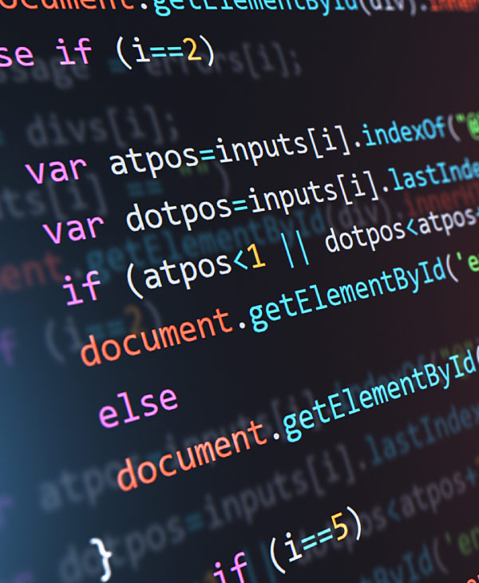

La ingeniería de sistemas es una rama de la ingeniería que se encarga del diseño, la programación, la implantación y el mantenimiento de sistemas. ... Se trata de una ciencia interdisciplinaria, que requiere de diversos conocimientos para plasmar sus diseños en la vida práctica.
Un sistema de cómputo es un conjunto de elementos electrónicos que interactúan entre sí, (Hardware ) para procesar y almacenar información de acuerdo a una serie de instrucciones.

La programación informática es el proceso por medio del cual se diseña, codifica, limpia y protege el código fuente de programas computacionales. ... El lenguaje de programación es el responsable de que la computadora siga paso a paso las órdenes que el programador ha diseñado en el algoritmo.